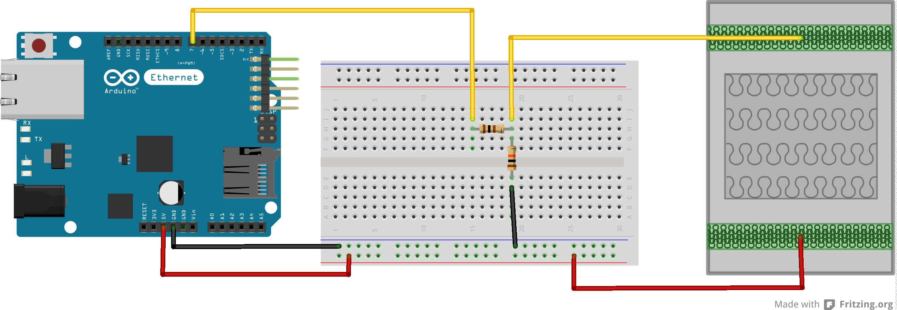

Things
If you are a hardware developer interesting in adding an API to your device. The steward supports two standard protocols which a device can choose to support and be "Thing System native."
If a thing needs to report sensor readings, or an event happening, to the steward it can implement the Thing Sensor Reporting Protocol. This is a simple multicast UDP based protocol. The repository contains example code for Arduino and iOS to help developers add the Thing Sensor Reporting Protocol to their things.
If a thing is capable not just of reporting sensor readings, or events, but also of performing actions then it can implement the Simple Thing Protocol. This protocol is more complex that the reporting protocol, and is a websocket based protocol, but allows the steward to interact with the remote thing. Both to ask for sensor readings, instead of just passively waiting for them to be reported, but also to ask it to perform an action, e.g. turn a light on or off. These smart devices normally have a programmable environment. Examples of this sort of thing include smart phones, tablets, and the things that attach to them, such as Motrr's Galileo, Romotive's Romo, the Swivl, and so on.
Building TSRP Things
Building things using the Thing Sensor Reporting Protocol is fairly easy. Let's take a simple example of a pressure mat connected to an Arduino Ethernet board.

Wiring up the mat as shown in the above diagram the following code will send a multicast TSRP packet when the mat changes state, i.e. when weight is put on the mat (state changes to "on") or when weight is removed (state changes to "off). A heartbeat packet will also be sent every 60 seconds to let the steward know that the device is still alive and connected to the network.
NB: Without this heartbeat packet the steward will mark this device as "absent".
#include <Dhcp.h>
#include <Dns.h>
#include <Ethernet.h>
#include <EthernetClient.h>
#include <EthernetServer.h>
#include <EthernetUdp.h>
#include <util.h>
#include <SPI.h>
void send_packet( char * state );
void callback( );
int requestID = 1;
unsigned long lastCallbackTime = 0; // the last time the data was written
byte mac[] = { 0x0, 0xA2, 0xDA, 0x0D, 0x90, 0xE2 };
char packetBuffer[512];
PROGMEM prog_char *loopPacket1 = "{\"path\":\"/api/v1/thing/reporting\",\"requestID\":\"";
PROGMEM prog_char *loopPacket2 = "\",\"things\":{\"/device/sensor/arduino/seated-mat\":{\"prototype\":{\"device\":{\"name\":\"7-10# Chair Occupancy Sensor Mat\",\"maker\":\"RECORA\"},\"name\":\"true\",\"status\":[\"present\",\"absent\",\"recent\"],\"properties\":{\"contact\":[\"on\",\"off\"]}},\"instances\":[{\"name\":\"Pressure Mat\",\"status\":\"present\",\"unit\":{\"serial\":\"";
PROGMEM prog_char *loopPacket3 = "\",\"udn\":\"195a42b0-ef6b-11e2-99d0-";
PROGMEM prog_char *loopPacket4 = "-mat\"},\"info\":{\"contact\":\"";
PROGMEM prog_char *loopPacket5 = "\"},\"uptime\":";
PROGMEM prog_char *loopPacket6 = "}]}}}";
// All TSRP transmissions are via UDP to port 22601 on multicast address '224.192.32.19'.
EthernetUDP udp;
IPAddress ip(224,192,32,19);
unsigned int port = 22601;
const int buttonPin = 7;
int buttonState;
int lastButtonState = LOW;
int sentPacket = 0;
long lastDebounceTime = 0;
long debounceDelay = 50;
void setup() {
pinMode(buttonPin, INPUT);
Serial.begin(9600);
Serial.println("Starting...");
while(!Serial) { }
Serial.println("Waiting for DHCP address.");
if (Ethernet.begin(mac) == 0) {
Serial.println("Error: Failed to configure Ethernet using DHCP");
while(1) { }
}
udp.beginMulti(ip,port);
}
void loop() {
int reading = digitalRead(buttonPin);
if (reading != lastButtonState) {
lastDebounceTime = millis();
}
if ((millis() - lastDebounceTime) > debounceDelay) {
buttonState = reading;
if ( buttonState && !sentPacket ) {
Serial.println("Sending contact = on");
send_packet( "on" );
sentPacket = 1;
} else if ( !buttonState && !sentPacket ) {
Serial.println("Sending contact = off");
send_packet( "off" );
sentPacket = 1;
}
}
if ( lastButtonState != reading ) {
sentPacket = 0;
}
lastButtonState = reading;
if ((millis() - lastCallbackTime) > 60000) {
if ( buttonState ) {
Serial.println("Sending heartbeat (on)");
send_packet( "on" );
sentPacket = 1;
} else {
Serial.println("Sending heartbeat (off)");
send_packet( "off" );
sentPacket = 1;
}
lastCallbackTime = millis();
}
}
void send_packet( char * state ) {
char buffer[12];
strcpy(packetBuffer,(char*)pgm_read_word(&loopPacket1) );
strcat(packetBuffer, itoa( requestID, buffer, 10) );
strcat(packetBuffer,(char*)pgm_read_word(&loopPacket2) );
for (byte thisByte = 0; thisByte < 6; thisByte++) {
sprintf(buffer, "%x", mac[thisByte] );
strcat(packetBuffer, buffer);
}
strcat(packetBuffer,(char*)pgm_read_word(&loopPacket3) );
for (byte thisByte = 0; thisByte < 6; thisByte++) {
sprintf(buffer, "%x", mac[thisByte] );
strcat(packetBuffer, buffer);
}
strcat(packetBuffer,(char*)pgm_read_word(&loopPacket4) );
strcat(packetBuffer, state);
strcat(packetBuffer,(char*)pgm_read_word(&loopPacket5) );
strcat(packetBuffer, itoa( millis()/1000, buffer, 10) );
strcat(packetBuffer,(char*)pgm_read_word(&loopPacket6) );
Serial.println(packetBuffer);
udp.beginPacket(udp.remoteIP(), udp.remotePort());
udp.write(packetBuffer);
udp.endPacket();
requestID = requestID + 1;
}
This example makes use of multicast UDP. Although supported by the underlying hardware this isn't supported by the stock Ethernet library distributed with the Arduino. You'll need to patch the Ethernet library as below. Add the following declaration to EthernetUdp.h directly after line 55,
// Initialize, start listening on specified port. Returns 1 if successful, 0 if there are no sockets available to use
virtual uint8_t beginMulti(IPAddress, uint16_t);
then add the following code to the end of EthernetUdp.cpp,
/* Start EthernetUDP socket, listening at local port PORT */
uint8_t EthernetUDP::beginMulti(IPAddress ip, uint16_t port) {
Serial.println("beginMulti()");
if (_sock != MAX_SOCK_NUM)
return 0;
for (int i = 0; i < MAX_SOCK_NUM; i++) {
uint8_t s = W5100.readSnSR(i);
if (s == SnSR::CLOSED || s == SnSR::FIN_WAIT) {
_sock = i;
break;
}
}
if (_sock == MAX_SOCK_NUM)
return 0;
// Calculate MAC address from Multicast IP Address
byte mac[] = { 0x01, 0x00, 0x5E, 0x00, 0x00, 0x00 };
mac[3] = ip[1] & 0x7F;
mac[4] = ip[2];
mac[5] = ip[3];
W5100.writeSnDIPR(_sock, rawIPAddress(ip)); //239.255.0.1
W5100.writeSnDPORT(_sock, port);
W5100.writeSnDHAR(_sock,mac);
_remaining = 0;
socket(_sock, SnMR::UDP, port, SnMR::MULTI);
return 1;
}
you shouldn't need to restart the Arduino IDE, the changes will be included next time you compile a sketch.